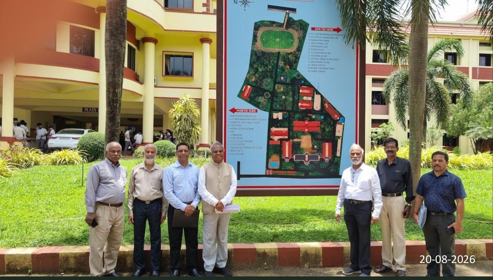

VIDYA MISSION 33|VAST TCR|GREEN CAMPUS|Vision & Mission
One programme, six commitments
To develop VAST as a resilient, resource-efficient and people-centred campus where responsible stewardship of the environment is embedded in institutional life, learning and continuous sustainable growth.
1
Restore & Enhance
Create a well-planned, green, safe and welcoming campus through zonal development, landscaping and biodiversity initiatives.
2
Reduce & Optimize
Improve energy, water and resource efficiency while progressively reducing the campus carbon footprint.
3
Measure & Improve
Establish measurable sustainability practices through monitoring, audits, KPIs and continuous improvement.
4
Engage & Educate
Make the campus a living platform for students, faculty, staff, alumni and the community to participate, learn and contribute.
5
Govern & Institutionalize
Establish clear ownership, accountability and governance mechanisms to embed sustainability into planning and operations.
6
Align & Demonstrate
Build credible evidence of responsible practice, aligned with institutional quality, accreditation and relevant SDGs.
VIDYA MISSION 33|VAST TCR|GREEN CAMPUS|The Proposition
Building on what's already working
Build on the 38.07% carbon mitigation already achieved through renewable energy and sequestration.
50%+
Next target — campus emission mitigation
<150 kg
Long-term target — CO₂e per student
260 kWpSolar — renewable energy, maximum rooftop capacity allowed
+500Trees — carbon sequestration & biodiversity
49.02 tCO₂e/yr — energy efficiency & demand reduction
??Low-carbon mobility & resource optimisation — still to be defined
* 49.02 tCO₂e/yr is the minimum additional mitigation expected from identified energy-efficiency and demand-reduction measures. Further mitigation must come from sequestration, mobility, resource optimisation and initiatives not yet scoped.
Plus 500 Tree Club — 0 of 0 sample entries pledged or dedicated
0%
Dedicated
Pledged
Open / pending audit
Mirrors the same dummy data as the full Tree Register — not a count of real sponsorships.
VIDYA MISSION 33|VAST TCR|GREEN CAMPUS|The Initiatives
Thirteen initiatives, mapped to the mission
Filter by pillar, or read every initiative in full. Each one is designed to pay back against more than one line of the mission.
VIDYA MISSION 33|VAST TCR|GREEN CAMPUS|Impact & Governance
One green campus programme, multiple returns
Every workstream is built to pay back in more than one currency at once.
EnvironmentOperational efficiencyStudent learningAccreditation evidenceInstitutional reputation
| Workstream | NAAC / Quality | NBA | SDG linkage | Evidence generated |
|---|
| Energy + solar | Environmental practices; documented improvement | Facilities / support systems; continuous improvement | 7, 13 | Meter data, energy savings, solar generation |
| Water + waste | Environmental management / best practices | Governance + facilities evidence | 6, 12 | Meters, inventories, water balance, disposal records |
| Green zones + trees | Institutional values / campus practices | Facilities + continuous improvement | 3, 11, 13, 15 | Zone scorecards, survival, photos, biodiversity |
| Learning + outreach | Student engagement / community practice | Outcome-oriented evidence | 4, 11, 17 | Projects, NSS/VSEC activity, partnerships |
| Governance + dashboard | Quality systems / documented practice | Governance + monitoring | 16, 17 | Minutes, KPI reviews, corrective actions |
Governance flow
Green Campus Committee→
Zone Owners→
Quarterly KPI Reporting→
Annual Audit→
Continuous Improvement
VIDYA MISSION 33|VAST TCR|GREEN CAMPUS|Proposal Approval Request
What we're asking the Executive Committee for

Campus review, 20 August 2026 — the walk-through that shaped this proposal.
01
Approve the direction
Approve the VAST Green Campus Master Plan as a VM:33 institutional initiative.
02
Establish governance
Zone Owners → monthly inspection, activity, evidence & corrective action
Green Campus Committee → programme governance, priorities, review & escalation
Institution Management → execution, budget & operational implementation
Executive Committee → strategic oversight & periodic review
03
Detailed proposals
Prepare DPRs, cost estimates and business cases for prioritized initiatives.
04
Establish measurement
Mandate monthly KPIs and annual Green Campus evidence reporting.
Note: individual capital expenditure proposals will be submitted separately for approval, based on DPRs and business cases.
VIDYA MISSION 33|VAST TCR|GREEN CAMPUS|About Us
Vidya Academy of Science & Technology
An engineering institution in Thalakkottukara, Thrissur, now approaching its Silver Jubilee — and the home of the Green Campus programme under Vidya Mission 33.
To develop VAST as a resilient, resource-efficient and people-centred campus where responsible stewardship of the environment is embedded in institutional life, learning and continuous sustainable growth.
2,247Students on campus
~23 yrsSince the main entrance was built
12Named campus zones, A0–A11
13Green Campus initiatives
●
Who we are
Vidya Academy of Science & Technology (VAST), Thalakkottukara, Thrissur – 680501, run under the Vidya trust (VICT). The campus has grown into one of the leading engineering institutions in the region.
●
Vidya Mission 33
The institutional initiative under which the VAST Green Campus Master Plan is proposed, with six commitments: restore, reduce, measure, engage, govern and align.
●
Our campus
Includes a Kavu (sacred grove), a Herbal Garden and the Nakshatra Vanam — with 849 audited trees and a target of 500 more through the Plus 500 Tree Club.
The programme at a glance
- Baseline: 673.31 tCO₂e gross footprint in 2024–25 (Ottotractions Environment Audit), with 38.07% already mitigated after the new solar plant*
- Next target: 50%+ campus emission mitigation; long-term target below 150 kg CO₂e per student
- Campus review held 20 August 2026; proposal to the Executive Committee of VICT dated 13 September 2026
- Governance: Zone Owners → Green Campus Committee → Institution Management → Executive Committee
“Restore what we have, measure what we use, improve what we can, and leave a better campus for the next generation.”